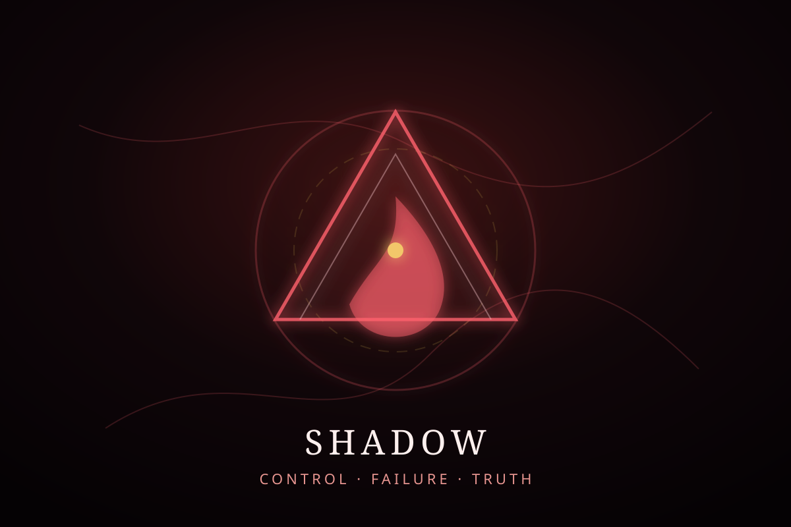

Castle UBT · Shadow room
The Proving Ground
Contradiction hunting, controls, and honest failure criteria.
If it matters, it must survive pressure.
Shadow protects the public frame from drift. A beautiful idea is not enough. It must survive comparison, controls, and a receipt that names what failed.
UBT is presented here as a framework and test program, not completed proof of new physics.

Shadow gates
Controls
Compare against ordinary explanations before promoting a branch lane.
Failure
Name what would falsify, weaken, or demote the claim.
Receipt
Record what changed after the test, including nulls and rejected paths.